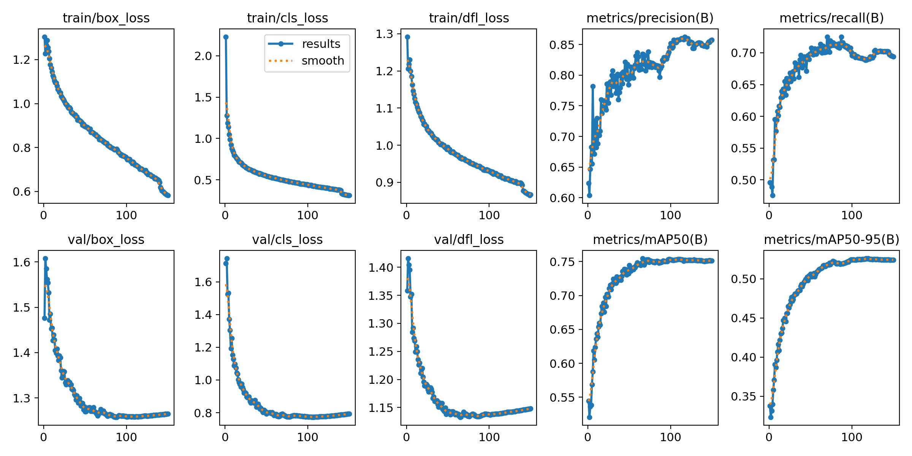
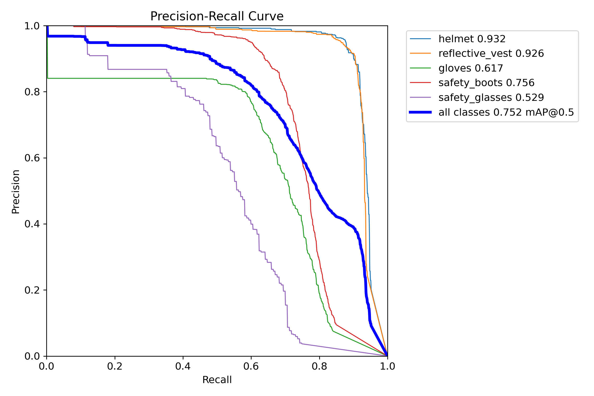
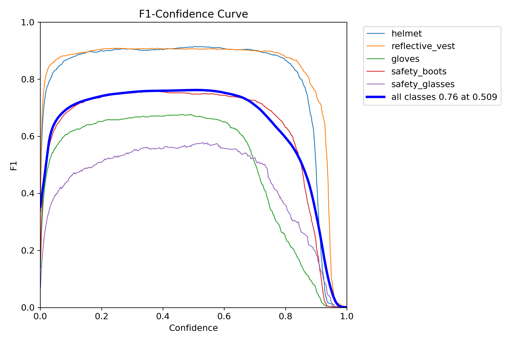
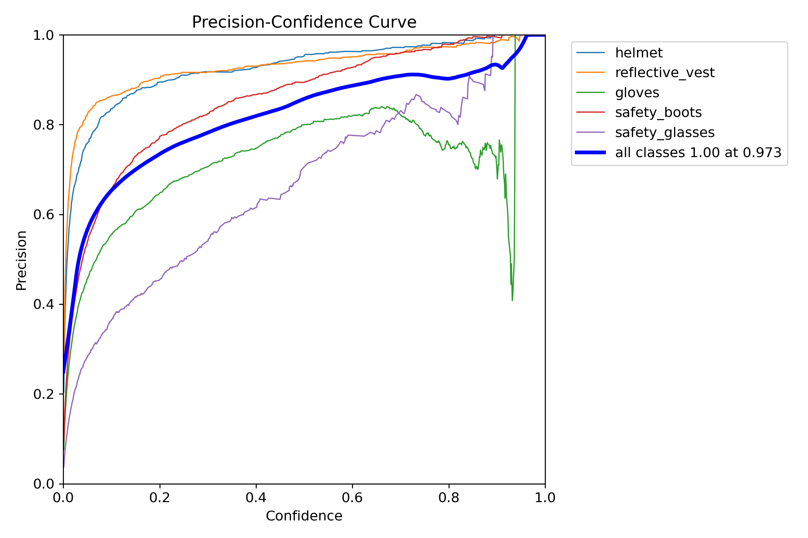
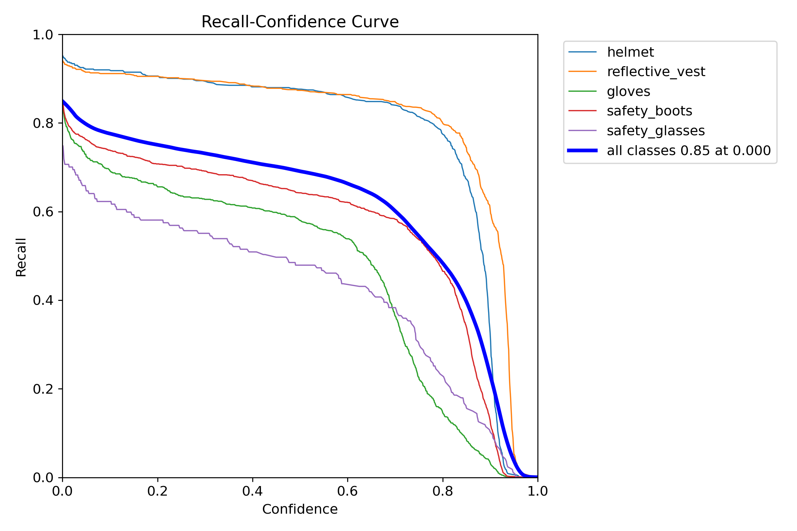
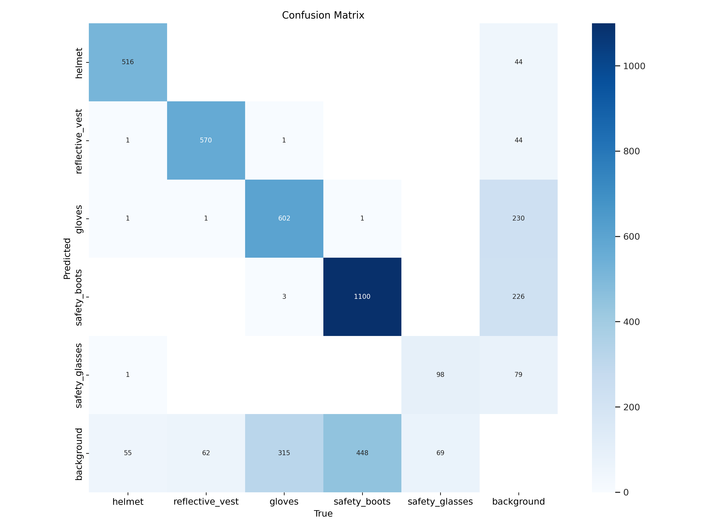
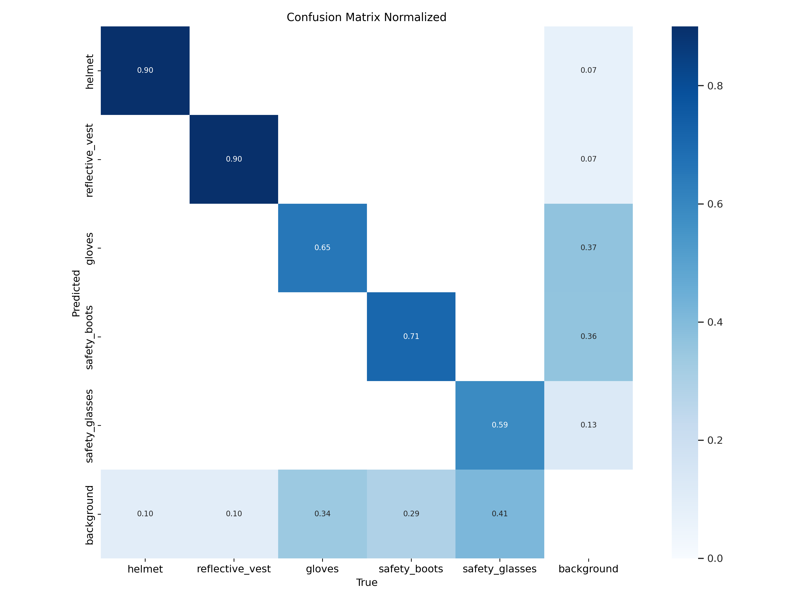
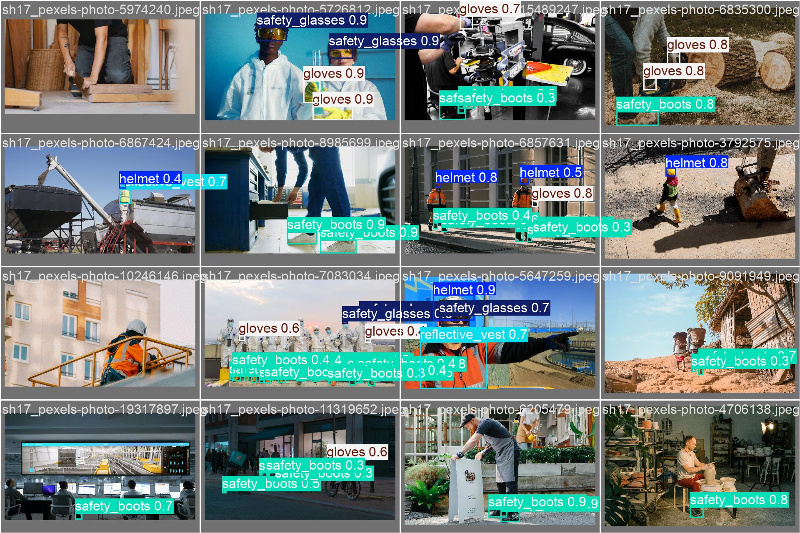
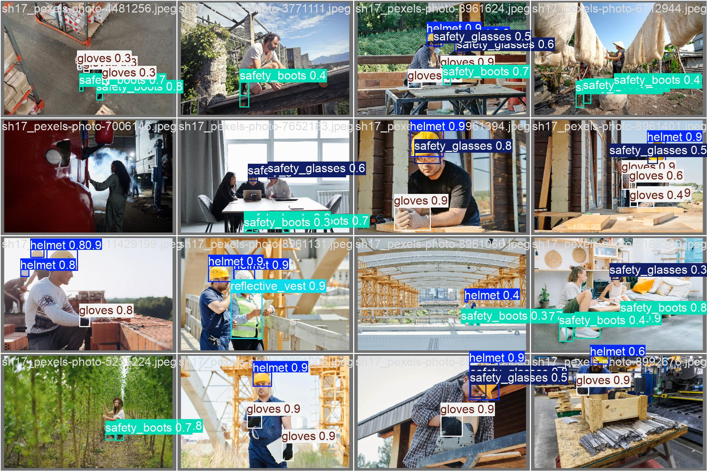
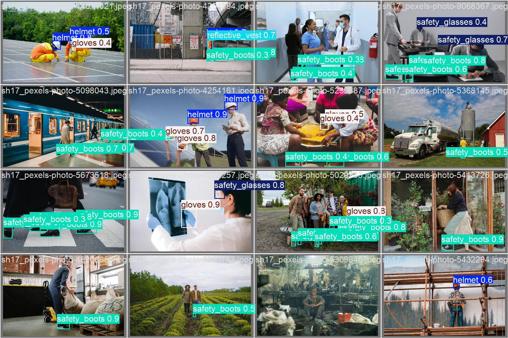

Dự án Safety PPE Checker đã hoàn thành thành công giai đoạn huấn luyện mô hình phiên bản 2 (ppe_v2) — phát hiện 5 loại thiết bị bảo hộ lao động (PPE) cho công nhân điện. Đây là phiên bản cải tiến toàn diện so với ppe_v1, sử dụng kiến trúc mạnh hơn và dataset lớn hơn.
| Chỉ số (Best Checkpoint) | Giá trị |
|---|---|
| Precision | 84.5% |
| Recall | 70.1% |
| mAP@50 | 75.4% |
| mAP@50-95 | 52.5% |
Mô hình đã hội tụ ổn định sau 150 epoch, không có dấu hiệu overfitting. Kết quả đầu ra là file best.pt sẵn sàng tích hợp.
Công nhân điện lực làm việc trong môi trường nguy hiểm cao — yêu cầu bắt buộc phải mặc đầy đủ 5 loại PPE. Hệ thống AI giúp tự động hóa quy trình kiểm tra này, tránh sai sót thủ công.
| ID | Tên lớp | Mô tả |
|---|---|---|
| 0 | helmet | Mũ bảo hộ cứng |
| 1 | reflective_vest | Áo phản quang |
| 2 | gloves | Găng tay bảo hộ |
| 3 | safety_boots | Giày bảo hộ |
| 4 | safety_glasses | Kính bảo hộ |
Công nhân chỉ được PASS khi cả 5 loại PPE được phát hiện vượt ngưỡng tin cậy. Thiếu bất kỳ 1 món = FAIL.
| Tập | Số ảnh |
|---|---|
| Train | 10,081 |
| Validation | 1,129 |
| Test | 223 |
| Tổng cộng | 11,433 |
| Lớp | Train | Val | Test | Tổng Instances | Nhận xét |
|---|---|---|---|---|---|
helmet | 8,189 | 574 | 194 | 8,957 | Tốt |
vest | 8,562 | 633 | 254 | 9,449 | Tốt |
gloves | 9,330 | 921 | 51 | 10,302 | Tốt |
boots | 13,261 | 1,549 | 286 | 15,096 | Phổ biến nhất |
glasses | 1,245 | 167 | 0 | 1,412 | Thiếu hụt |
safety_glasses chỉ chiếm 3.1% tổng số instances và hoàn toàn không có trong tập TEST, đây là điểm yếu lớn nhất của Dataset V2.
| GPU | NVIDIA GeForce RTX 4070 Ti (12GB) |
| CUDA | 12.8 |
| Framework | YOLOv8 — Ultralytics 8.3.0 |
Mô hình được huấn luyện với kiến trúc YOLOv8s (Small) trong 150 epoch, sử dụng copy_paste=0.3 (augmentation mạnh) để giúp học các vật thể nhỏ như kính và găng tay.










| Tiêu chí | V1 (Legacy) | V2 (Current) |
|---|---|---|
| Kiến trúc | YOLOv8n (Nano) | YOLOv8s (Small) |
| Dataset | ~Vài trăm ảnh | 11,433 ảnh |
| Precision | 85.7% | 86.7% |
| Recall | 68.7% | 70.1% |
| mAP@50 | 74.8% | 75.4% |
Nhận xét: V2 cải thiện độ bao phủ (Recall), giúp mô hình ít bỏ sót trang phục bảo hộ hơn — yếu tố sống còn trong an toàn lao động.
| Lớp PPE | Mức Rủi Ro | Lý do |
|---|---|---|
safety_glasses | 🔴 Cao | Thiếu ảnh nghiêm trọng (3% dataset) |
gloves | 🟡 Trung bình | Góc chụp xa khó nhận diện |
helmet/vest | 🟢 Thấp | Dữ liệu đa dạng, hội tụ tốt |
gloves và glasses nên đặt thấp (**0.40**).| Tên file | Đường dẫn |
|---|---|
| Model Weights (Best) | runs/detect/train3/weights/best.pt |
| Training Logs | runs/detect/train3/results.csv |
| Dataset Config | data/dataset_v2.yaml |
best.pt vào backend ngay lập tức.Mô hình PPE V2 đạt mAP@50 75.4%, đủ tiêu chuẩn để triển khai Beta. Mặc dù vẫn còn hạn chế ở lớp kính bảo hộ do thiếu dữ liệu, nhưng đây là nền tảng vững chắc cho hệ thống giám sát an toàn lao động hiện tại.